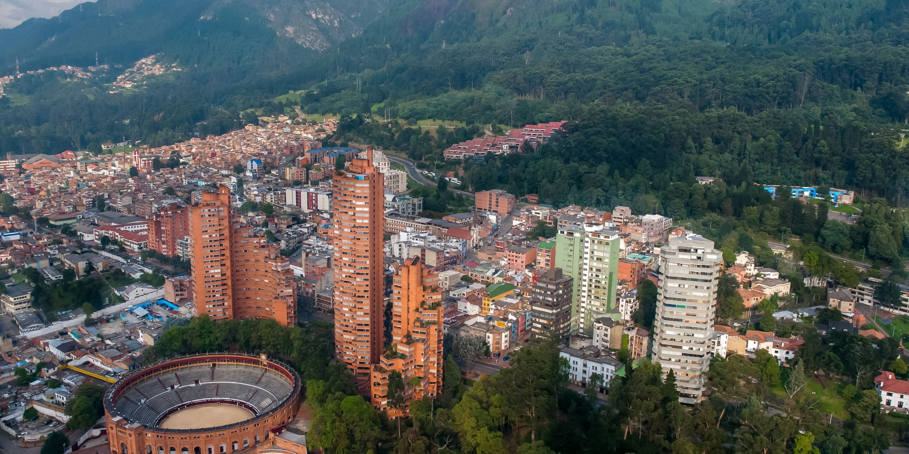
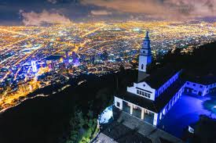
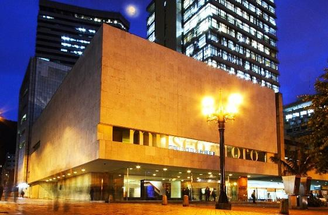

Bogotá: Capital Cultural de Colombia

Descripción
Bogotá, la vibrante capital de Colombia, es conocida por su rica historia, arte contemporáneo y escena gastronómica. Es un destino ideal para explorar la cultura colombiana y disfrutar de actividades urbanas.
Puntos Turísticos


Actividades Recomendadas
- Visitar el Museo Nacional de Colombia.
- Explorar el barrio histórico de La Candelaria.
- Disfrutar de la gastronomía local en Usaquén.